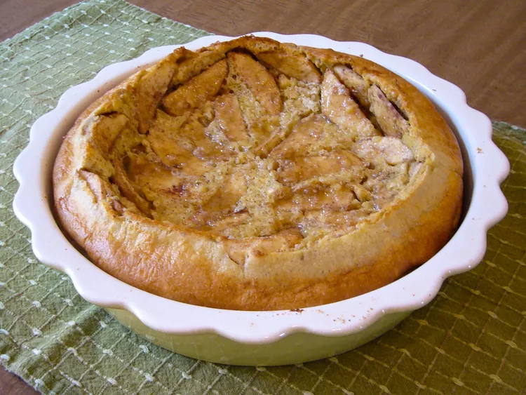

Apple Puff Pancake

Description
The BEST Apple Pancakes are made from scratch with fresh grated apple. They are easy to make, light, fluffy, and delicious! Also they are A great alternative to regular pancakes.
Ingredients
- 6 eggs
- 1 ½ cups milk
- 1 teaspoon vanilla extract
- 1 cup all-purpose flour
- 3 tablespoons sugar
- ½ teaspoon salt
- ¼ teaspoon ground cinnamon
- 2 tablespoons butter
- 2 apples - peeled, cored and sliced
- 3 tablespoons brown sugar
Steps
- Preheat the oven to 425 degrees F (220 degrees C).
- Blend eggs, milk, and vanilla with an electric mixer in a large bowl. Add flour, sugar, salt, and cinnamon; mix just until blended. Set batter aside.
- Melt butter in a 9x9-inch square pan. Arrange apple slices in the bottom of the pan; pour batter over them. Sprinkle brown sugar on top.
- Bake in the preheated oven until puffed and lightly browned, about 20 minutes.
Back to the main page